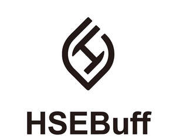

Trade Mark Journal No.2025/038 19 September 2025
UK00004261228 9 September 2025 (3,5,35)

- Class 3
- Air fragrancing preparations; Bath preparations, not for medical purposes; Bath salts, not for medical purposes; Beauty masks; Breath freshening preparations for personal hygiene; Cakes of soap; Cleaning preparations; Cleansing milk for toilet purposes; Cosmetics; Cotton wool for cosmetic purposes; False eyelashes; Hair colorants; Hair conditioners; Lip glosses; Mascara; Mouthwashes, not for medical purposes; Perfumes; Shampoos; Soap; Toothpaste.
- Class 5
- Dietary supplements; Herbal supplements; Dietary and nutritional supplements; Liquid dietary supplements; Dietary supplements for animals; Dietary food supplements; Dietary supplements for infants; Energy gels (dietary supplements); Dietary supplements in powder form; Dietary supplements with a cosmetic effect; Dietary supplements and dietetic preparations; Food supplements for dietetic use; Dietary supplements promoting fitness and endurance; Dietary food supplements used for modified fasting; Dietary supplements for pets in the nature of a powdered drink mix.
- Class 35
- Advertising; Product demonstrations and product display services; Sales promotion for others; Product merchandising for others; Business supervision [on behalf of others]; Procurement services for others [purchasing goods and services for other businesses]; Wholesale ordering services; Import and export agency services; Business advertising services relating to franchising; Online advertising via a computer communications network; Commercial intermediation services; Supply chain management services; Product marketing; Providing business information via a website; Business representative services; Brand strategy services; Business supervision; Presentation of goods on communication media, for retail purposes; Brand creation services (advertising and promotion).
Natura Matrix Group Limited
Representative: PROVIK LIMITED